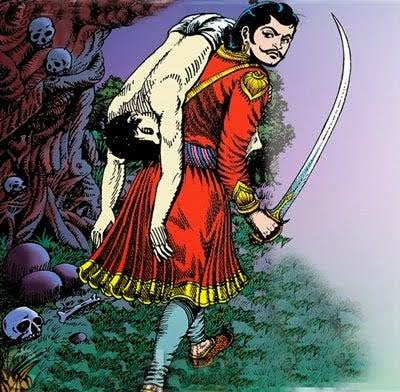

12. સૌથી નમ્ર કોણ છે ? |
બેતાલ ઝાડ પર પાછા ઉડવાનો અને રાજા વિક્રમના તેને ફરીથી પકડવાનો ક્રમ ચાલુ રહે છે. આ વખતે રાજા વિક્રમાદિત્ય બેતાલને ફરીથી ઝાડ પરથી નીચે લઈ જાય છે. રસ્તામાં બેતાલ રાજાને કહે છે, "રસ્તા બહુ મોટો છે, હું તમને બીજી વાર્તા કહું, તમે ધ્યાનથી સાંભળો." બેતાલ કહે છે..
એક સમયે, ગૌર નામના દેશ પર રાજા ગુણશેખરનું શાસન હતું. રાજા એટલો શક્તિશાળી હતો કે તેની ખ્યાતિ દૂર દૂરના રાજ્યોમાં ફેલાઈ ગઈ. તે રાજાને ત્રણ સુંદર પુત્રીઓ હતી. ત્રણેય એટલા સૌમ્ય હતા કે રાજાને ઘણી વાર તેમની ચિંતા થતી.
રાજાની મોટી પુત્રી એટલી નાજુક હતી કે ચંદ્રના પ્રકાશથી પણ તેના શરીર પર ફોલ્લા પડી જતા. ગુલાબના ફૂલ જેવી નાજુક વસ્તુ તેની સાથે અથડાય તો પણ બીજી દીકરીને ઈજા થાય અને લોહી નીકળે. ત્રીજી દીકરીને કોઈના ચાલવાનો કે ધક્કો મારવાનો અવાજ આવતાં જ તેના હાથ-પગમાં ફોલ્લા પડી જતા.
 તેની કોમળતા વિશે સાંભળીને બધાને આશ્ચર્ય થયું. ઘણા રાજકુમારો પણ તેની સાથે લગ્ન કરવા માંગતા હતા, પરંતુ તેણીની નમ્રતા વિશે જાણ્યા પછી પાછા ફર્યા. રાજાને તેમના લગ્નની ચિંતા થવા લાગી. તે વિચારવા લાગ્યો કે તેની કોમળ દીકરીઓ આ કઠોર દુનિયામાં કેવી રીતે ટકી શકશે.
પછી રાજાએ નક્કી કર્યું કે તે પહેલા તેની પુત્રીને હંમેશા છાંયડામાં રાખશે, જેથી તેના શરીર પર કોઈપણ પ્રકારના પ્રકાશને કારણે ફોલ્લાઓ ન રહે. રાજાએ બીજી પુત્રીને હળવા કપડાં અને ઝવેરાત સાથે એવી જગ્યાએ રાખવાનું નક્કી કર્યું જ્યાં તેની સાથે કંઈપણ દખલ ન કરે. રાજે ત્રીજી દીકરીને એવી જગ્યાએ રાખી કે જ્યાં કોઈનો અવાજ ન પહોંચી શકે.
દરમિયાન, પડોશી રાજ્યનો એક રાજકુમાર તેની માયા વિશે સાંભળીને ગૌર દેશમાં પહોંચ્યો. તેણે પહેલા ગુલાબના ફૂલથી રાજકુમારીના ચહેરાને સ્પર્શ કર્યો, જેના કારણે રાજકુમારીના ચહેરા પર ઘા થઈ ગયા. રાજકુમારને આશ્ચર્ય થયું. આ પછી તેણે બીજી રાજકુમારીને ચાંદની રાતે બહાર જવા કહ્યું, પરંતુ જ્યારે રાજકુમારીએ ના પાડી તો તે તેને બારી પાસે લઈ ગયો જ્યાં ચાંદની પડતી હતી. રાજકુમારી પર ચંદ્રપ્રકાશ પડતાં જ તેના શરીર પર ફોલ્લાઓ દેખાયા.
બીજા દિવસે રાજકુમારે બધા લોકોને મસાલા પીસવા કહ્યું, જેનો અવાજ સાંભળીને સૌથી નાની રાજકુમારી બેહોશ થઈ ગઈ. આવી વાર્તા સંભળાવીને બેતાલ સાવ ચૂપ થઈ ગઈ અને રાજા વિક્રમને પૂછ્યું, "મહારાજ, કૃપા કરીને મને કહો કે આ ત્રણમાંથી કઈ રાજકુમારી સૌથી સુંદર અને સૌમ્ય છે અને રાજકુમાર કઈ રાજકુમારી સાથે લગ્ન કરશે."
પ્રશ્ન સાંભળ્યા પછી પણ રાજા વિક્રમાદિત્યએ કોઈ જવાબ ન આપ્યો. ગુસ્સામાં બેતાલે કહ્યું, “રાજન, જવાબ જાણ્યા પછી પણ તું જવાબ નહિ આપે તો હું મારી ઝડપે તારો શિરચ્છેદ કરી દઈશ.” થોડીવાર આ સાંભળીને રાજાએ કહ્યું, “ત્રીજી રાજકુમારી સૌથી સુંદર છે, કારણ કે કંઈપણ કર્યા વિના તેના હાથ-પગમાં ફોલ્લાઓ દેખાઈ રહ્યા હતા અને તે બેહોશ થઈ ગઈ હતી. તે માત્ર શરીરે જ નહીં મનથી પણ નરમ છે. તેથી જ રાજકુમાર સૌથી નાની રાજકુમારી સાથે લગ્ન કરશે.” તેને જવાબ મળતા જ બેતાલ રાજા વિક્રમની પીઠ પરથી ઊડીને ઝાડ પર લટકી જાય છે અને રાજા તેની પાછળ જંગલ તરફ દોડે છે.
વ્યક્તિએ પોતાનું મન સ્વચ્છ રાખવું જોઈએ. સ્વચ્છ મનવાળા લોકો બીજાના દુઃખને ઓળખે છે